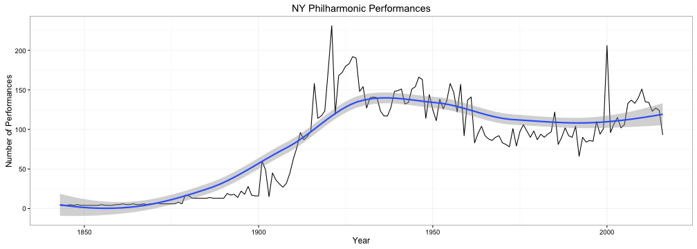
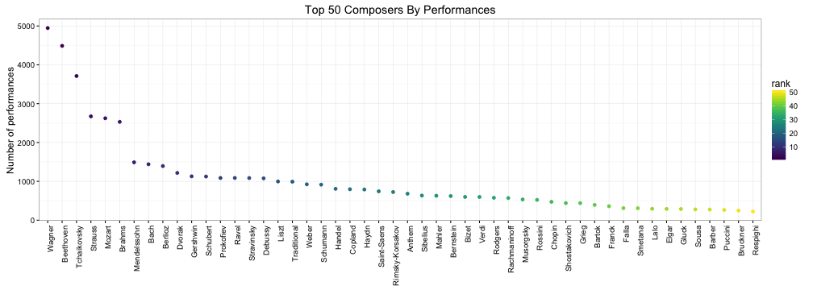

Overview
- Front matter
- Motivating example
- Introducing Plotly
- WOWs & WOEs
Jiun Siew
Introduction
Objective
The (simplified) exploratory data analysis process:
rawData <- get_data_from_somewhere(dataSource) # dataSource = SQL/csv/MapReduce
while (i_have_found_something = FALSE){
cleanedData <- clean_data(rawData) # yuck
df <- do_other_stuff(cleanedData) # transform, model, summarise
insights <- visualise(df) # look at the pretty colours
if (insights > significant_value){
## EUREKA!!!
i_have_found_something = TRUE
}
}
## programID date composer
## 1 3853 1842-12-07 Beethoven
## 2 3853 1842-12-07 Weber
## 3 3853 1842-12-07 Hummel
## 4 3853 1842-12-07
## 5 3853 1842-12-07 Weber
## 6 3853 1842-12-07 Rossini
## 7 3853 1842-12-07 Beethoven
## 8 3853 1842-12-07 Mozart
## Classes 'tbl_df' and 'data.frame': 82311 obs. of 3 variables:
## $ programID: int 3853 3853 3853 3853 3853 3853 3853 3853 3853 5178 ...
## $ date : Date, format: "1842-12-07" "1842-12-07" ...
## $ composer : chr "Beethoven" "Weber" "Hummel" "" ...
## programID date composer
## Min. : 1 Min. :1842-12-07 Length:82311
## 1st Qu.: 3647 1st Qu.:1926-12-09 Class :character
## Median : 7292 Median :1950-03-18 Mode :character
## Mean : 17063 Mean :1953-09-15
## 3rd Qu.: 10803 3rd Qu.:1982-02-25
## Max. :9913550 Max. :2016-03-19
Simple time-series with loess fit:

Ordered scatter type plot:

What is it?
plotly package for R
# ggplot way
ggplot(nPerfByYear, aes(x = date.yr, y = nPerf)) +
geom_line() +
theme_bw() +
stat_smooth() +
ggtitle("NY Philharmonic Performances") +
ylab("Number of Performances") +
xlab("Year")
# plotly
p <- plot_ly(nPerfByYear,
x = date.yr,
y = nPerf,
name = "Total Performances")
fitted.val <- fitted(loess(nPerf ~ lubridate::year(date.yr), data = nPerfByYear))
p <- p %>% add_trace(y = fitted.val, x = date.yr, name = "Loess Fit")
# ggplot way
n <- 50
ggplot(countsByComposer[1:n, ],
aes(x = reorder(composer, -nPerf), y = nPerf)) +
geom_point(aes(colour = rank)) +
scale_color_viridis() +
theme_bw() +
theme(axis.text.x = element_text(angle = 90, hjust = 1),
axis.title.x=element_blank()) +
ggtitle(paste0("Top ", n, " Composers By Performances")) +
ylab("Number of performances")
# plotly
pComposers <- plot_ly(countsByComposer[1:n, ], x = composer, y = nPerf,
color = rank,
text = paste("Rank: ", rank),
mode = "markers")
pComposers
You can also convert a ggplot object directly to a plotly one with ggplotly
# Summarise data
tmpDf <- plotDf.sum %>%
filter(composer %in% countsByComposer$composer[1:12])
tmpDf$composer.f <- factor(tmpDf$composer,
levels = countsByComposer$composer[1:12])
# Define my own coloursheme (from colorbrewer.org)
colorScheme = c('#a6cee3','#1f78b4','#b2df8a','#33a02c',
'#fb9a99','#e31a1c','#fdbf6f','#ff7f00',
'#cab2d6','#6a3d9a','#ffff99','#b15928')
# do a facet plot of time series for each composer
pFacet <- ggplot(tmpDf, aes(x = date.yr, y = nPerf)) +
geom_line(aes(colour = composer)) +
facet_wrap(~composer.f) +
theme_bw() +
ggtitle("NY Philharmonic Performances") +
ylab("Number of Performances") + xlab("Year") +
scale_color_manual(values = colorScheme) +
theme(legend.position="none")
ggplotly(pFacet)
# marker styling
m <- list(
colorbar = list(title = "Number of Performances (log)"),
size = 8, opacity = 0.8, symbol = 'square'
)
# geo styling
g <- list(
projection = list(type = 'natural earth'),
showcountries = TRUE,
showland = TRUE,
landcolor = toRGB("gray95"),
subunitcolor = toRGB("gray85"),
countrycolor = toRGB("gray85"),
countrywidth = 0.5,
subunitwidth = 1
)
pMap <- plot_ly(locationSummary, lat = lat, lon = lon, text = hoverText, color = nPerf.log,
type = 'scattergeo', mode = 'markers') %>%
layout(title = 'NY Philharmonic Performances', geo = g)
# plot the top n
n <- 50
pComposers <- plot_ly(countsByComposer[1:n, ], x = composer, y = nPerf,
color = rank,
text = paste("Rank: ", rank),
mode = "markers")
pComposers
pComposerFid <- "plotly_topComposers.html"
htmlwidgets::saveWidget(as.widget(pComposers), pComposerFid)
<iframe src="plotly_topComposers.html"
height='75%' width="100%">
</iframe>
ggplotly bridges ggplot and plotlyaes featuresThanks.